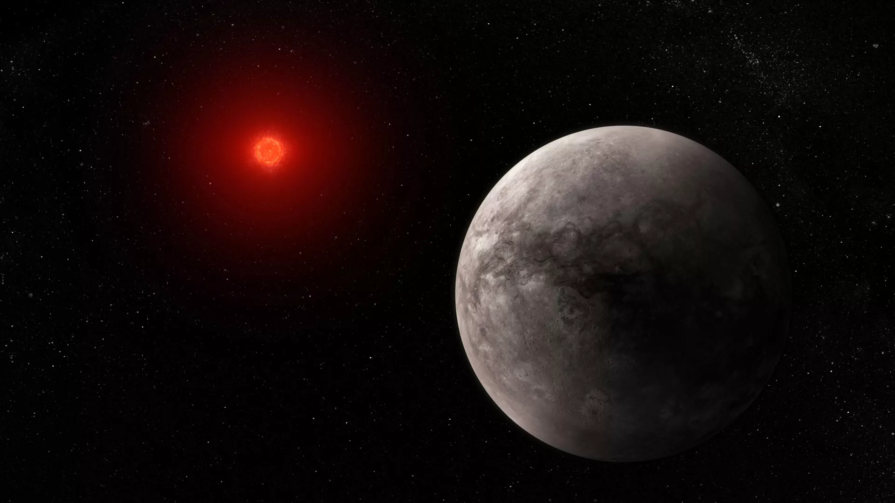
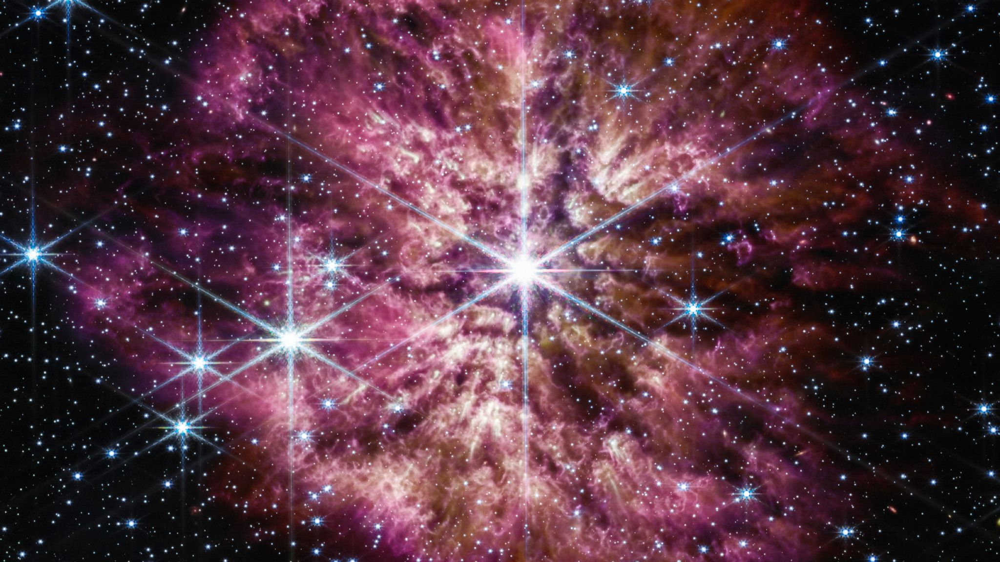
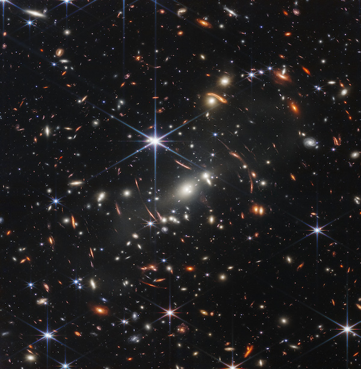

.svg)
All JWST News in one place
Explore the Final Frontier with Our Comprehensive Coverage of the JWST Mission
Welcome to my James Webb Space Telescope page! I'm excited to bring you the latest updates on this groundbreaking mission to explore the universe and unveil its mysteries. The JWST is the most powerful space telescope ever built, and its advanced technology and capabilities will allow us to see further and more clearly than ever before. As a passionate journalist and space enthusiast, I'm dedicated to bringing you the latest news, insights, and analysis on this exciting mission. Whether you're a space enthusiast, a science lover, or just curious about the universe, my JWST page is the perfect place to stay up-to-date on this historic mission.

This Months Highlights
James Webb Space Telescope finds no atmosphere on Earth-like TRAPPIST-1 exoplanet
The observation represents Webb's first detection of "any form of light" emitted by a rocky exoplanet.
NASA's James Webb Space Telescope captures image of a dying star
The telescope's infrared lens observed the gas and dust flung into space by a huge star 15,000 light-years away. The shimmering purple cast-off material once comprised the star's outer layer.
How far back in time can the James Webb Space Telescope see?
JWST's large aperture and infrared capability enable astronomers to explore the early universe.